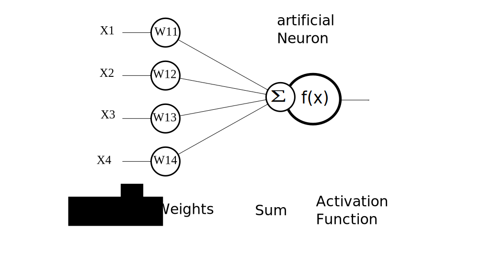
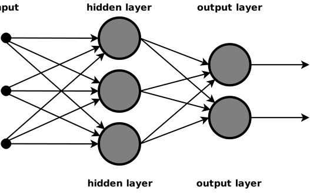

![]()
This post was motivated by a question from a student after my introductory cognitive psychology lecture. I wrote it as a short, self-contained explainer and then realized it would also work well as a blog post.
One of the oldest and most persistent questions in cognitive science is deceptively simple:
What form do mental representations take?
Are thoughts stored as symbolic propositions, like sentences in a mental language? Are they analog, resembling the structure of perception and action? Or are they something else entirely, patterns that do not neatly fit either category?
This question sits at the heart of debates between symbolic theories of cognition, production systems, and connectionist (neural network) models.
In this post, we will look at the same basic cognitive problems through three different lenses. Each lens makes different assumptions about what counts as a representation and how cognition operates on it. The goal is not to declare a winner, but to clarify what each approach is actually committing to.
To do that, it helps to step back, look briefly at some history, and ground the discussion in a few concrete toy examples.
A motivating toy problem: deciding whether two things are the same
Consider a very simple task: you see two shapes on a screen and must decide whether they are the same or different.
At first glance, this looks trivial. But it turns out to be an excellent test case for thinking about representations.
- A symbolic model might represent the shapes as discrete descriptions (e.g.,
shape = square,color = red) and apply an explicit rule: IF description(A) = description(B), THEN respond SAME. - An analog model might represent each shape as a point in a continuous feature space (size, orientation, curvature) and compute a distance between them.
- A connectionist model might take raw pixel inputs, learn internal representations through exposure, and produce a SAME or DIFFERENT response without ever explicitly representing the rule “compare features.”
All three approaches can solve the task, but they do so by making very different assumptions about what is represented and how.
The classical view: cognition as symbolic computation
Early cognitive science, emerging in the 1950s and 1960s, was strongly shaped by developments in logic, computer science, and artificial intelligence. Influential figures such as Allen Newell and Herbert A. Simon proposed that thinking is best understood as symbol manipulation.
In this view:
- Mental representations are explicit symbols with internal structure.
- These symbols express propositional content (e.g., IF goal is X AND condition Y holds, THEN do Z).
- Cognition consists of rule-based operations over these symbols.
Production systems, formal models built from rules that fire when their conditions are met, became a central formalism for this approach. Importantly, these theories were not meant as loose metaphors. They were intended as literal computational accounts of mental processes.
A concrete example: mental arithmetic
Take mental arithmetic, such as calculating 23 + 48.
A symbolic model assumes that numbers are represented as structured symbols (digits, place values) and that cognition consists of applying learned rules (carry the one, add digits, etc.). The process is discrete, stepwise, and explicitly rule governed. There is no sense in which the representation of 23 is closer to 24 than to 99. Those are simply different symbols (although you can include an explicit algorithm in the model to compute a distance based on mathematical rules, and then use that information in processing; but that is simply another set of symbolic rules).
In their purest form, symbolic theories do not assume analog or continuous representations. Symbols are discrete, structured, and combinatorial. Logical reasoning, formal problem solving, and language were the paradigmatic examples where this framework seemed especially powerful.
Hybrids and pragmatism: symbolic systems in practice
As cognitive modeling matured, it became clear that purely symbolic systems struggled with issues like learning, noise, timing, and graded behavior. Human cognition is slow, error prone, and sensitive to frequency and recency, properties that are awkward to capture with all or none rules.
In response, many symbolic architectures incorporated continuous elements.
A prominent example is ACT-R, which retains symbolic chunks and production rules but augments them with:
- activation levels,
- continuous decay and learning functions,
- noise and utility parameters.
A concrete example: memory retrieval
In ACT-R, whether you successfully recall a fact (e.g., Paris is the capital of France) depends not only on whether the symbol exists, but also on its activation, which reflects how often and how recently it has been used. Retrieval is probabilistic and graded, even though the retrieved item itself is symbolic.
Crucially, these quantities modulate access to symbols rather than replacing them. ACT-R is still fundamentally propositional, but it acknowledges that cognition is not cleanly binary or deterministic.
This illustrates an important point: even within symbolic traditions, researchers have long recognized the need for graded, quantitative mechanisms. The real disagreement is not about whether numbers exist in the system, but about what does the representing.
Common confusions to avoid
- Distributed does not mean vague or unstructured.
- Continuous does not automatically mean analog.
- Symbolic does not mean rigid, static, or unrealistic.
Much confusion in this area comes from sliding between these ideas without noticing.
The connectionist alternative: representations as patterns
A minimal neural network, just for context
Before going further, it helps to have a very simple picture in mind of what people mean by a neural network in cognitive modeling.
At its most basic, a neural network consists of simple units, artificial neurons, which aim to be a simplified version of real neurons. These units receive activation from other units. Each connection has a weight that determines how strongly activity is passed along. Units combine their inputs, apply a simple transformation (often a nonlinear one), and pass the result forward. Learning consists of gradually adjusting the weights so that the network produces better outputs for the task it is trained on.

These simple units can be organized in several layers, often labeled as:
- Input units, which receive information from the environment (for example, stimulus features or pixel values).
- Hidden units, which transform that information through weighted connections.
- Output units, which produce a response (for example, a decision or classification).
You can think of this schematically as:
inputs → hidden units → outputs

Nothing in this basic setup specifies symbols, rules, or explicit features. Those, if they appear at all, arise from how the network is trained and what problem it is asked to solve.
With that minimal picture in mind, we can return to the representational questions.
Connectionist models, often called neural networks, approach the problem from a very different angle. Rather than assuming a particular representational format, they specify:
- a set of simple processing units,
- weighted connections between them,
- a learning rule,
- and a task or environment.
What they do not specify in advance is the representational vocabulary.
Instead, representations emerge through learning as patterns of activation across units. These patterns are typically:
- distributed (many units participate),
- graded (activation varies continuously),
- and context sensitive.
A concrete example: category learning
Imagine training a network to categorize animals as birds or not birds based on features such as wings, beaks, feathers, and flight.
Early in training, the network may respond inconsistently. Over time, it develops internal activation patterns that reliably separate birds from non birds. Importantly, there may be no single unit that represents “bird.” Instead, birdness is encoded as a pattern across many units.
From the connectionist perspective, asking whether representations are “propositional” or “analog” is often the wrong question. The more relevant question is: What patterns are useful for solving the task, given the constraints of the system and its learning history?
Where is knowledge stored: weights or activations?
A common confusion concerns where “knowledge” resides in a neural network. The answer is: in both weights and activations, but in different ways.
- Weights encode persistent knowledge. They determine the space of possible representations and transformations the network can produce. One helpful way to think about weights is as storing dispositions or potentials, what the system is capable of representing.
- Activations encode momentary representations. At any given moment, the current pattern of activity across units reflects what the system is representing or processing right now.
An analogy: weights define the grammar of a language; activations are the sentences currently being spoken.
So knowledge is not “only in the weights,” nor are activations meaningless without them. Representation arises from their interaction.
What do different layers represent?
Although details vary across architectures, it is useful to distinguish roles typically played by different layers:
- Input units represent task relevant information from the environment. These might correspond to sensory features, stimulus dimensions, or structured encodings supplied by the modeler.
- Hidden units develop internal representations shaped by learning. These are often the most theoretically interesting part of the network. They may reflect abstract dimensions, latent variables, or compressed structure in the task.
- Output units represent the system’s response, choices, classifications, actions, predictions.
A concrete example: perception to action
In a simple vision to action network, input units might encode pixel intensities, hidden units might come to represent edges or object parts, and output units might encode motor responses such as grasp or avoid. None of these representations is explicitly symbolic, but they can still support behavior that looks rule governed.
None of these layers is intrinsically symbolic or analog. A network trained on logical inference may develop symbol like internal states; one trained on perception may develop smooth, metric representations. The architecture does not dictate the representational format. The task does.
A crucial unifying insight
Modern neural networks are universal function approximators. In principle, they can implement symbolic computations just as well as continuous mappings.
What distinguishes connectionist models is not what they can compute, but how the computations are specified:
- Symbolic models rely on hand crafted representations and rules supplied by the theorist.
- Connectionist models rely on learning, allowing representations and transformations to be discovered rather than prescribed.
This shifts the theoretical focus. Instead of asking What is the right representational format?, cognitive science increasingly asks:
How do structured representations arise from learning, constraints, and interaction with the environment?
That question, rather than a strict symbolic vs. analog dichotomy, captures much of what is at stake in contemporary theories of cognition.
Why this distinction matters
At an introductory level, it might seem like this debate is mostly philosophical. But it has very practical consequences.
- It affects how we design experiments. Are we testing explicit rules, similarity spaces, or learned representations?
- It affects how we interpret behavior. Is an error a failure of a rule, a noisy comparison, or a learned bias?
- It affects how we think about artificial intelligence. Modern AI systems succeed largely by learning representations rather than being given them, which brings connectionist ideas back to center stage.
Most importantly, it affects how we think about explanation in psychology. A good cognitive theory does not just reproduce behavior. It tells us what kind of internal structure could plausibly give rise to that behavior.
Understanding the representational commitments of different models is the first step toward making sense of that structure.
Reuse
Citation
@online{popov2026,
author = {Popov, Vencislav},
title = {Are {Cognitive} {Representations} {Propositional,} {Analog,}
or {Something} {Else?}},
date = {2026-02-20},
url = {https://venpopov.com/posts/2026/are-cognitive-representations-propositional-analog-or-something-else/},
langid = {en}
}